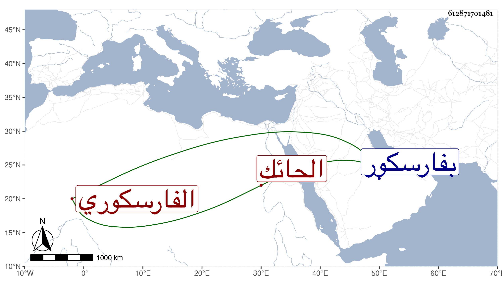

0902Sakhawi.DawLamic.ITO20230111-ara1.EIS1600.612871701481
Biography ID: 612871701481
إبراهيم بن خليل بن عمر بن أحمد بن خليل بن إبراهيم الفارسكوري الحائك ويعرف بابن النبشاوي بفتح النون والموحدة والمعجمة ولد في أوائل سنة عشر وثمانمائة تقريبا بفارسكور وقرأ بها القرآن وصلى به ثم ارتزق بالحياكة وتعانى النظم فمدح النبي صلى الله عليه وسلم بقصائد عدة ولقيه ابن فهد والبقاعي في سنة ثمان وثلاثين فكتبا عنه قوله :
| قد فاق وجهك بدرتم مقمرا | وكذا قوامك فاق غصنا مثمرا |
وكان جيدا وقورا رقيقا عليه آثار الخير والسكينة لا يخلو عن فضيلة في النحو . مات في .
